<nav layout="row" flex ng-cloak>
    <md-toolbar ng-cloak>
        <div class="md-toolbar-tools background-blue" ng-cloak>
            <md-button class="md-icon-button" aria-label="sidenav" ng-click="go_to('home.html')">
                
            </md-button>

            <span flex></span>

            <div class="md-icon-button utente" ng-modal='utente' ng-cloak>
                <div ng-if="utente">
                    
                    <span>{{utente.nome}} {{utente.cognome}}</span>

                    <md-button class="md-icon-button logout" aria-label="sidenav" ng-click="logout()" >
                        <!--<md-icon md-svg-icon="img/icons/menu.svg"></md-icon>-->
                        
                    </md-button>
                </div>
                <div ng-if="login_controlla_completed && !utente">
					<md-button class="md-raised md-accent" ng-click="go_to('index.html')">
						Login
					</md-button>
                </div>

            </div>
        </div>
    </md-toolbar>


    <div id="menu" class="lock-size" layout="row" layout-align="center center">
    	<md-fab-speed-dial md-open="menu.isOpen" md-direction="down" class="md-scale">
    		<md-fab-trigger>
    			<md-button aria-label="menu" class="md-fab md-primary">
    				<md-icon md-svg-src="img/icons/hamburger.svg"></md-icon>
    			</md-button>
    		</md-fab-trigger>

    		<md-fab-actions>
    			<md-button aria-label="Visualizza" class="md-fab md-raised md-mini" ng-click="go_to('visualizza.html')">
        			<md-tooltip md-direction="left">Bakeca</md-tooltip>
    			 	<!--<md-icon md-svg-src="img/icons/show.svg" aria-label="Visualizza"></md-icon>-->
    			 	
    			</md-button>
                <!--
    			<md-button aria-label="Inserisci" class="md-fab md-raised md-mini" ng-click="go_to('inserimento.html')">
        			<md-tooltip md-direction="left">Inserisci turno</md-tooltip>
    				<md-icon md-svg-src="img/icons/insert.svg" aria-label="Inserisci"></md-icon>
    			</md-button>
                -->
    			<md-button aria-label="Inserisci" class="md-fab md-raised md-mini" ng-click="go_to('inserimento.html')">
        			<md-tooltip md-direction="left">Inserisci turno</md-tooltip>
    				<!--<md-icon md-svg-src="img/icons/insert_turno.svg" aria-label="Inserisci"></md-icon>-->
    			 	
    			</md-button>
    			<md-button aria-label="Inserisci" class="md-fab md-raised md-mini" ng-click="go_to('inserimento_riposo.html')">
        			<md-tooltip md-direction="left">Inserisci riposo</md-tooltip>
    				<!--<md-icon md-svg-src="img/icons/insert_riposo.svg" aria-label="Inserisci"></md-icon>-->
    			 	
    			</md-button>
    			<md-button aria-label="Utenti" class="md-fab md-raised md-mini" ng-click="go_to('gestione_utenti.html')">
        			<md-tooltip md-direction="left">Utenti</md-tooltip>
    				<md-icon md-svg-src="img/icons/users.svg" aria-label="Users"></md-icon>
    			</md-button>
    		</md-fab-actions>
    	</md-fab-speed-dial>
    </div>

</nav>